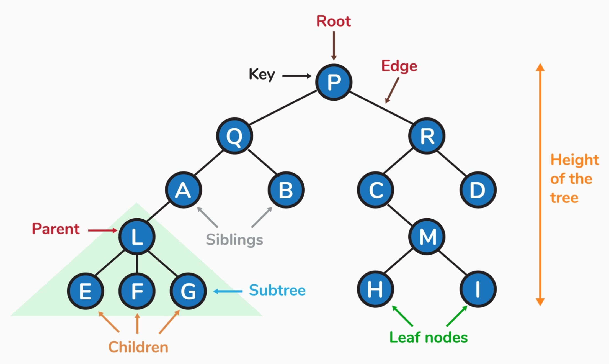
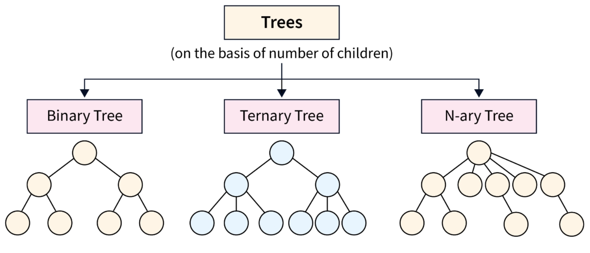
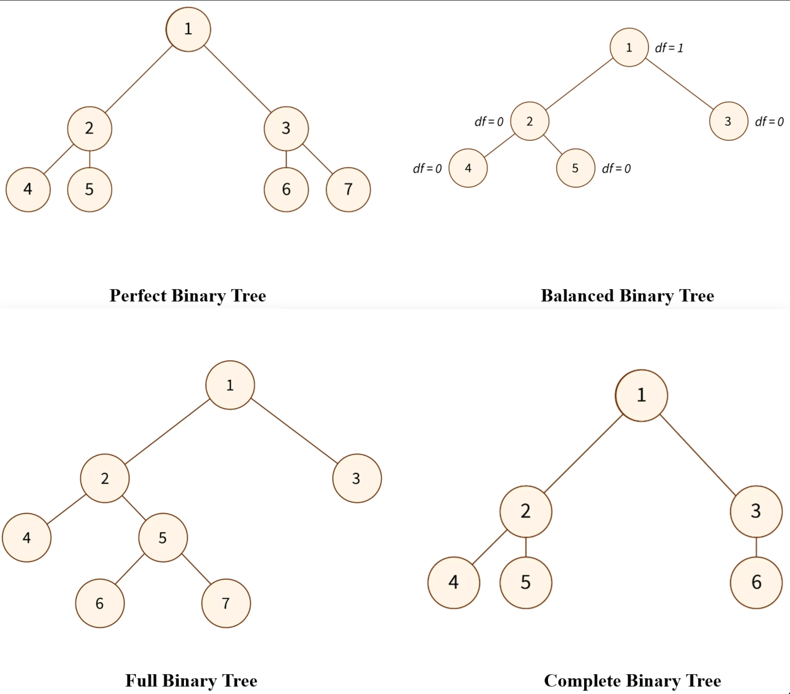
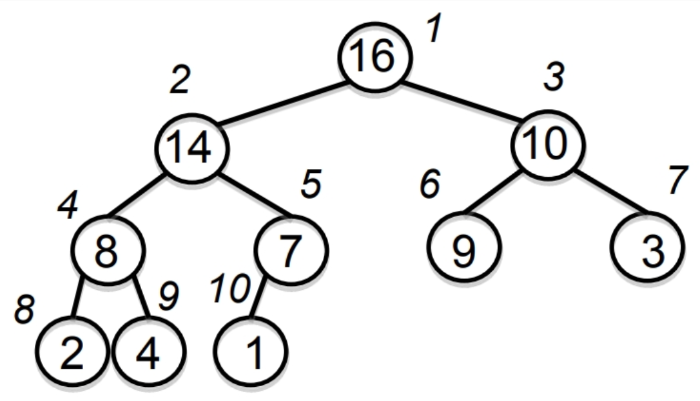
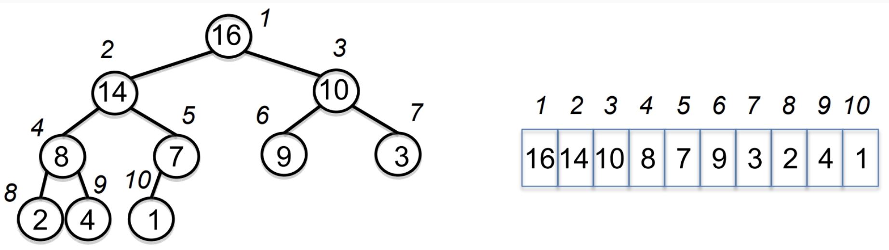
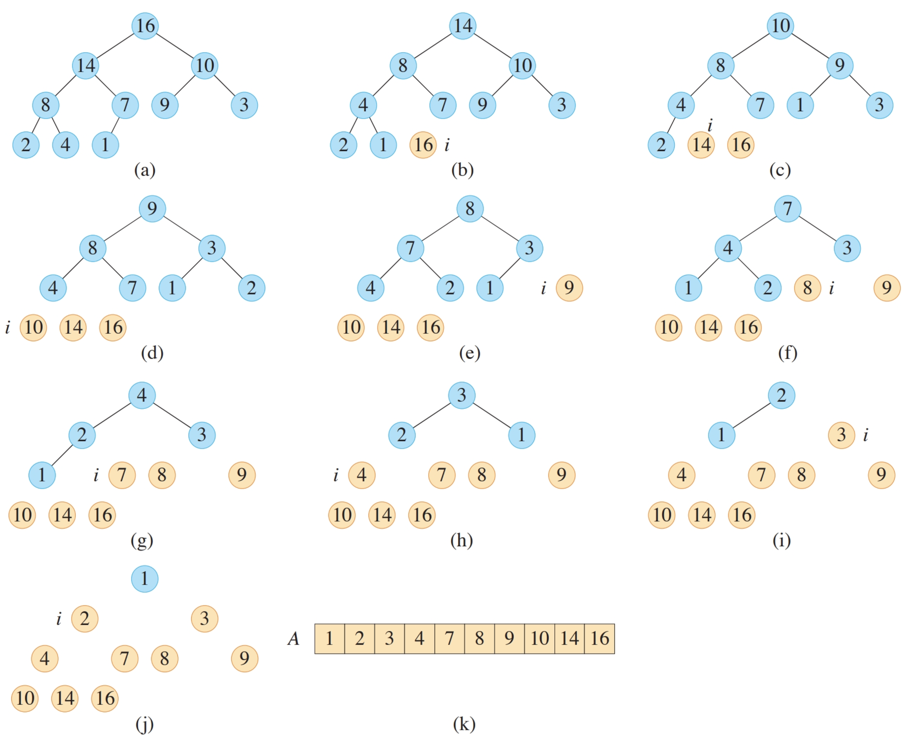

lecture #9
Trees were designed to model hierarchical structure and recursive decompositions.



Heaps efficiently implement priority queues using complete binary trees.

Root holds the maximum key; each subtree is itself a max-heap.

Constant-time navigation via index arithmetic.
After decreasing a node’s key (or moving last element to root), push it down until heap property holds.
This is operation is often called "max heapify" or "heapify down".
MAX-HEAPIFY(A, i, heap_size)
L ← 2i
R ← 2i+1
largest ← i
if L ≤ heap_size and A[L] > A[largest] then
largest ← L
if R ≤ heap_size and A[R] > A[largest] then
largest ← R
if largest ≠ i then
swap A[i], A[largest]
MAX-HEAPIFY(A, largest, heap_size)
Running time: O(log n)
What does MAX-HEAPIFY do on input:
[2.5, 10, 4, 9, 6, 3, 2, 8, 7, 5, 0, 1]Answer: MAX-HEAPIFY at i=1 swaps 2.5↔10, then 2.5↔9, then 2.5↔8; stop. Result: [10, 9, 4, 8, 6, 3, 2, 2.5, 7, 5, 0, 1].
Remove and return the maximum while maintaining a max-heap.
EXTRACT-MAX(A, heap_size)
if heap_size < 1 then error "underflow"
max ← A[1]
A[1] ← A[heap_size]
heap_size ← heap_size − 1
MAX-HEAPIFY(A, 1, heap_size)
return max
After increasing a node’s key, bubble it up until heap property holds.
What does Heapify Up at i=10 do on:
[20, 10, 4, 9, 6, 3, 2, 8, 7, 21, 0, 1]Answer: HEAPIFY-UP from i=10 swaps 21↔6, then 21↔10, then 21↔20; stop. Result: [21, 20, 4, 9, 10, 3, 2, 8, 7, 6, 0, 1].
HEAPIFY-UP(A, i)
while i > 1 and A[⌊i/2⌋] < A[i] do
swap A[i], A[⌊i/2⌋]
i ← ⌊i/2⌋
Running time: O(log n)
HEAP-INCREASE-KEY(A, i, key)
if key < A[i] then error "new key is smaller"
A[i] ← key
while i > 1 and A[⌊i/2⌋] < A[i] do
swap A[i], A[⌊i/2⌋]
i ← ⌊i/2⌋
MAX-HEAP-INSERT(A, x, heap_size)
heap_size ← heap_size + 1
A[heap_size] ← x
HEAPIFY-UP(A, heap_size)
Transform an arbitrary array A[1..n] into a max-heap by local repairs.
BUILD-MAX-HEAP(A, n)
heap_size ← n
for i ← ⌊n/2⌋ downto 1 do
MAX-HEAPIFY(A, i, heap_size)

HEAPSORT(A, n)
BUILD-MAX-HEAP(A, n)
for i ← n downto 2 do
swap A[1], A[i]
heap_size ← heap_size − 1
MAX-HEAPIFY(A, 1, heap_size)